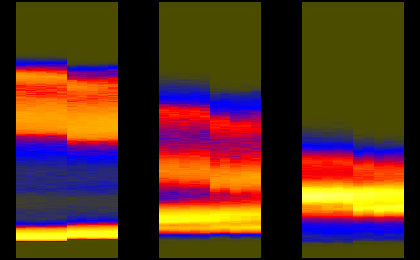
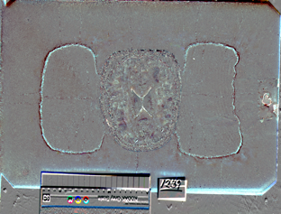
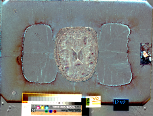
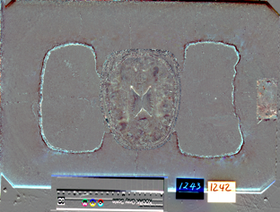
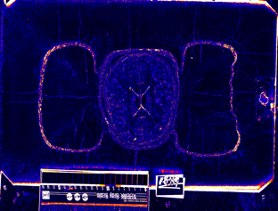
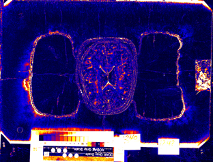
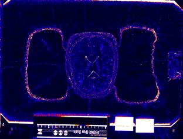

Female
|
|
|
| |||
| teem | / | nrrd | / |
Visible Female |
Image Differences 1 |
Slice indices and names are:
235: avf1079b.raw.Z 236: avf1079c.raw.Z 237: avf1080a.raw.Z 238: avf1080b.raw.Z
unu join -i histax{R,G,B}.ppm -a 3 | unu crop -min 0 232 0 0 -max M m+9 M M \
| histaxzoom | topng doc/hist1.png
zcat data/avf1079b.raw.Z | sliceprep -o 0.ppm
zcat data/avf1079c.raw.Z | sliceprep -o 1.ppm
zcat data/avf1080a.raw.Z | sliceprep -o 2.ppm
zcat data/avf1080b.raw.Z | sliceprep -o 3.ppm
unu 2op - {0,1}.ppm -t int | cquant | shrink | topng doc/diff1CA.png
unu 2op - {1,2}.ppm -t int | cquant | shrink | topng doc/diff1CB.png
unu 2op - {2,3}.ppm -t int | cquant | shrink | topng doc/diff1CC.png
unu 2op - {0,1}.ppm -t int | nquant | shrink | topng doc/diff1NA.png
unu 2op - {1,2}.ppm -t int | nquant | shrink | topng doc/diff1NB.png
unu 2op - {2,3}.ppm -t int | nquant | shrink | topng doc/diff1NC.png
|  | ||
| hist1.png: Segments of the red, green, and blue axis histograms, for Z slices 232 to 241. | ||
|  |  |  |
| diff1CA.png | diff1CB.png | diff1CC.png |
|  |  |  |
| diff1NA.png | diff1NB.png | diff1NC.png |